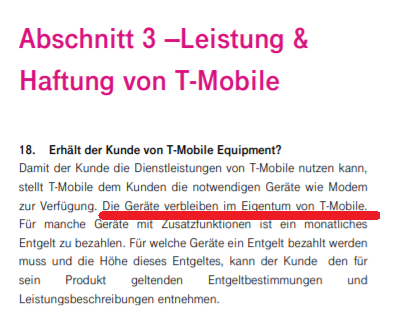
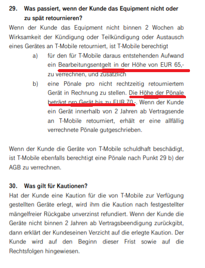

{kind=link}
{kind=link}
Soweit ich das sehe gibt es dort einige LTE Sender aber 5G sehe ich da noch nicht.
Ja Rücktrittsrecht hast du - bitte aber den Vertrag genau durchlesen.
Wäre schön, wenn du uns dann noch Feedback gibst, wie es bei dir läuft...

Hallo Leute
ein frage ich habe mir heute einen Test Router von magenta geholt um zu testen ob bei mir zuhause ein wlan funktioniert
habe mir eine klar Text simkarte um 25 Euro geholt und den pin rausgegeben wegen Router
der Router zeigt mir an das alles gut funktioniert aber wenn ich mich mit dem wlan verbinde ladet keine Seite wie wenn kein Internet vorhanden ist woran kann das liegen bzw wie kann ich das lösen ?
lg
Hallo @Rick und Willkommen in der Magenta Community,
Bei deinem abgebildeten Huawei HA35- 22 handelt es sich um einen Hybrid Router. Bei diesem ist ein DSL Zugang (Festnetz Internet) in der Kombination mit einem mobilen Zugang Voraussetzung. Schau dich am besten um einen Huawei B525 oder B535 um.
Wenn du das Magenta Netz bei dir zuhause testen möchtest, kannst du die Klax SIM-Karte auch in das freigeschaltene Smartphone einlegen und dieses über Tethering mit deinem Laptop, PC etc. verbinden.
Bearbeitet von Rexalius2000
Ja ich kenn diesen Router auch.
Und noch was - 2 Striche bedeuten bei diesem Router etwa 37 bis 47% Empfangspegel. Bei 48% würde dann schon die 3. LED leuchten.
Was ich damit sagen will, viel Empfang hast du bei dir im Innenbereich nicht.
Der Hybrid Router ist eine Leihgabe von Magenta und diese sollte nach der Kündigung des Anschlusses retour gesendet werden. Es könnte sonst eine Pönale verrechnet werden.
Ja das ist sicher wichtig, wobei - das muss auch schriftlich im Vertrag hinterlegt sein.
Wenn da nichts steht, sehe ich das nicht kritisch.
vor 10 Stunden schrieb Christian_E:Ja das ist sicher wichtig, wobei - das muss auch schriftlich im Vertrag hinterlegt sein.
Wenn da nichts steht, sehe ich das nicht kritisch.
Habe mir jetzt mal die AGB herausgesucht. Wie vermutet bleibt der Hybrid-Router im Besitz von Magenta bzw. muss retourniert werden.


Bearbeitet von Rexalius2000
Ah super!
Danke für die Info. Dann ist die Lage klar.
Hallo an alle 🙈
herzlichen danke für die ganzen Rückmeldungen
ich habe mir ein Handy besorgt was offen für alle Netze ist und bringe wie auf der simkarte die ich mir gekauft habe mit 4g lte 28 MB Download und 6 MB Upload zusammen denke aber da müsste mir 5G definitiv mehr gehen da der Zeiger kurzzeitig sogar drüber schlägt was denkt ihr dazu ?
Ist 5G schneller bzw. besser oder bekomme ich mit 4g das selbe zusammen?
Den Router habe ich mir nicht direkt bei magenta sonder bei einem Fachhändler geborgt sprich es gibt keinen Vertrag dazu .
Ich freue mich wieder auf eure antworten
Was steht denn in deinem Vertrag?
Welche Geschwindigkeit ist bei dir inkludiert?
Wenn du in der Nähe eines 4G Senders bist, kannst da weit über 100 Mbit kommen. 4G kann ja einiges.
5G muss jetzt nicht immer schneller sein aber wenn die Infrastruktur passt, dann sind die Ressourcen bei 5G natürlich noch besser - vor allem die Antwortzeiten (Ping) sollten noch deutlich niedriger sein als bei 4G.
Aber da solltest du wissen, was dein Vertrag zulässt.
Ich habe derzeit gar keinen Tarif habe mir diese Karte hier gekauft um das Netz an sich mal zu testen !
Wie finde ich raus wo du 4g bzw 5g Sender in meiner Umgebung sind?
lg
Ja schau mal auf der Karte.
Da steht max. 30 Mbit Download.
Da ist es dann egal ob 4G oder 5G - da geht nicht mehr als 30 MBit mit dieser SIM.
Ja das ist mir schon klar
aber ich bin ja am überlegen ob ich mir bei magenta den Vertrag mit dem 5G Router nehme mit 150mb Download und deshalb frage ich ob ich da 5G nehmen soll oder den 4g
Dann musst du wissen, ob 5G in deiner Nähe ist.
Da kannst du dich hier orientieren:
https://www.cellmapper.net/
Aber wenn du in Stadtnähe wohnst und 5G noch nicht in der Nähe ist, ist es wahrscheinlich, dass 5G früher oder später auch bei dir sein wird.
Und ein 5G Router kann natürlich auch 4G - also bist du damit schon mal auf der sicheren Seite.
Irgendwie werde ich aus dieser Karte nicht wirklich schlau
also ich wohne zwischen Gallneukirchen und Altenberg da wäre 2 Sender in der Nähe wenn ich das richtig deute ?
ja ich denke ich bestelle es einfach online da habe ich dann 14 Tage Rücktrittsrecht oder ?
Soweit ich das sehe gibt es dort einige LTE Sender aber 5G sehe ich da noch nicht.
Ja Rücktrittsrecht hast du - bitte aber den Vertrag genau durchlesen.
Wäre schön, wenn du uns dann noch Feedback gibst, wie es bei dir läuft...

In Cellmapper ist die 5G Verfügbarkeit noch nicht drinnen, weil dies erst von der erfassbar wird, wenn das Netz auf 5G standalone umgestellt wird.
Die Verfügbarkeit es gesamten 5G Netz kann man auf folgender Seite einsehen: https://www.magenta.at/netz
Und nur die Verfügbarkeit des Gigabit fähigen 3.5 GHz 5G Netz kann man auf folgender Seite nachsehen:
Ich würde eher den gigakraft 5G 250 nehmen als den Flex 150, da mit dem 5G 250 eben Zugang zum 5G Netz möglich ist und wenn 5G nicht geht, ist die Priorität im 4G Netz höher ist als bei den Flex Tarifen.
Die Klax 30 Sim, welche du hast, hat auch eine höhere Priorität im Netz als die Flex Tarife.
Ja, online gibt es die Möglichkeit in den ersten 14 Tagen zurückzutreten. Details dazu findest du auf
https://www.magenta.at/unternehmen/rechtliches/agb im Abschnitt "Fernabsatz"
Bearbeitet von NTM
Ich hab nochmal nachgesehen.
Die Sender in deiner Nähe strahlen die Bänder 1, 3 und 8 aus.
Da sollte auf alle Fälle was gehen. Von der Infrastruktur auf alle Fälle ok!
vor 3 Minuten schrieb Christian_E:Ich hab nochmal nachgesehen.
Die Sender in deiner Nähe strahlen die Bänder 1, 3 und 8 aus.
Da sollte auf alle Fälle was gehen. Von der Infrastruktur auf alle Fälle ok!
Ist das auf 5G oder auf 4G bezogen ?
Direkt in Gallneukirchen gibts auch 5G soweit ich das gerade gesehen habe.
Altenberg in den östlichen Teilen des Orts auch - dann könnte es auch dazwischen funktionieren.

vor 2 Minuten schrieb Rick:Ist das auf 5G oder auf 4G bezogen ?
Das war auf 4G bezogen.
Also auch wenn 5G bei dir noch nicht ordentlich rein kommt - auch mit 4G dürftest du eine ordentliche Bandbreite schaffen. Je nachdem, wie stark das Netz ausgelastet ist.
Hallo Leute!
habe mir den magenta 5G Router bestellt und jz mal zwei Tage getestet
also ich komme auf 240-250mbit download und knapp 25 Mbit Upload im 5G Netz
also muss ich sagen ich bin sehr zufrieden was das betrifft
eine Frage habe ich allerdings noch ist es normal das der Ping variiert wenn andere etwas down oder uploaded ?
habe für normal zwischen 19-25 ms aber ab und an auch mal 120 Ma wenn jemand Instagram surft oder Netflix schaut zb ist das normal ?
Ich kenn das aus der LTE oder DSL Welt. Da ist das normal und konnte ich auch immer wieder mal beobachten.
Aber deine Werte sind super - freut mich, wenn das gut geklappt hat.
Hallo Rick!
Das sind aber tolle Werte! Ja,das ist ganz normal,auch bei meinen DSL oder LTE Anschluss geht der Ping hoch wenn jemand im selben Netzwerk(WLAN oder LAN) unterwegs ist. Man kann aber bei einer Fritz! Box denn Datenverkehr prioresieren das dies nicht vorkommt,habe mich nur noch nicht damit beschäftigt.Viel Spaß weiterhin beim surfen,streamen etc. 😀